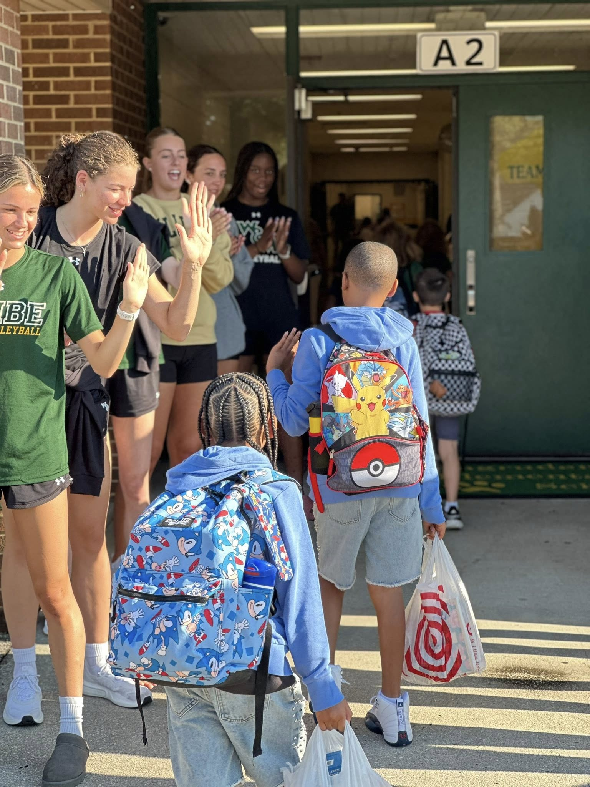
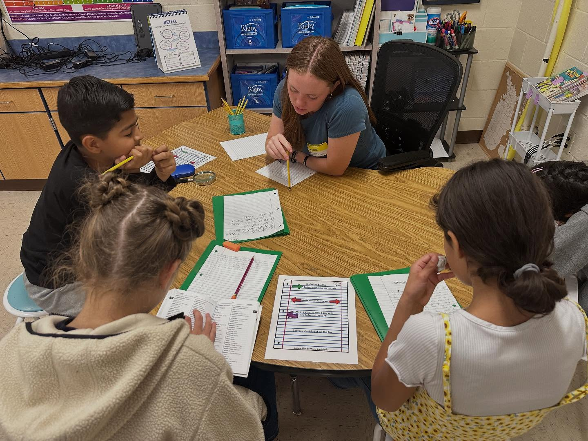
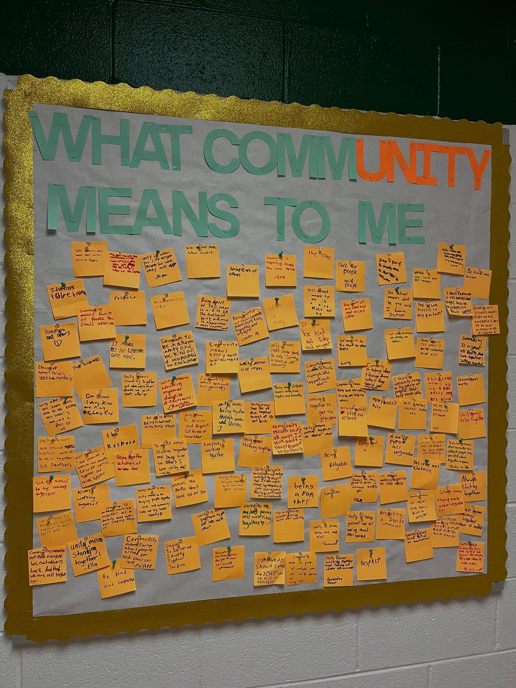
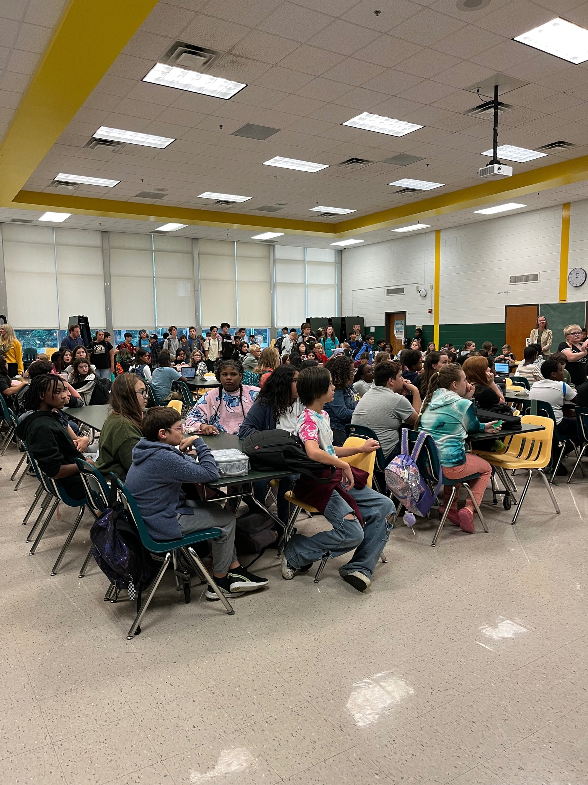
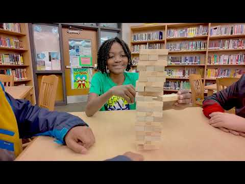
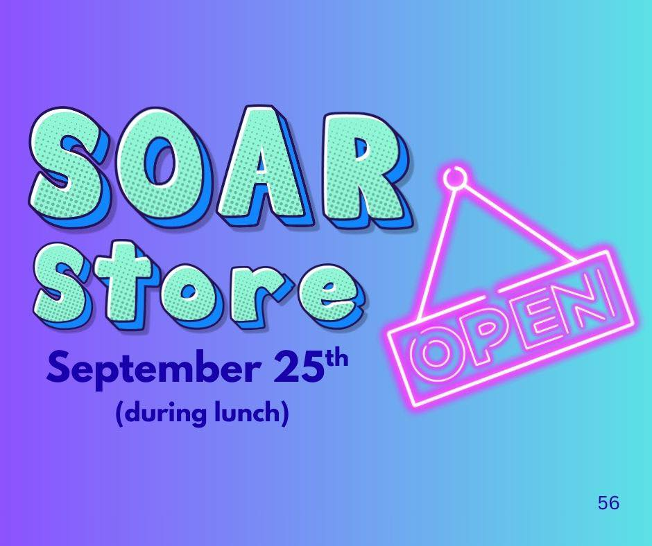
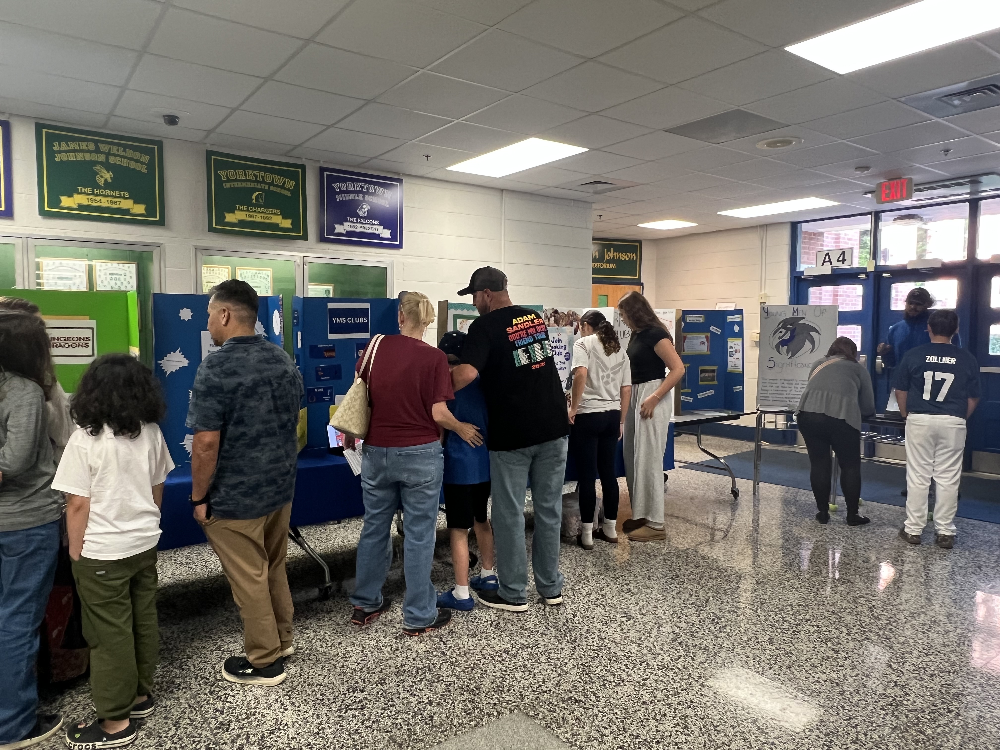

Cohort 1 📍 Region 2
York County designed its Community Schools program around the idea that belonging drives attendance. All three schools — Queens Lake Middle, Yorktown Middle, and Magruder Elementary — paid stipends to staff to build programming that gives students a reason to come to school, supported by dedicated coordinators, implementation teams, and professional development on community school strategies. The division is working toward a 10% increase in student attendance and a 5% increase in family engagement by the end of the grant period.
Each school shapes what belonging looks like for its community. At Yorktown Middle, student-versus-staff dodgeball is earned through attendance, behavior, and grades. At Queens Lake, after-school clubs drew standing-room-only attendance at their very first meeting. Magruder Elementary, the newest addition and the division's first elementary community school, is where that belonging starts.
York County exemplifies VCSI Stage 3.1: Align to the Four Branches of Student Support. York County offers programming that sustains student motivation and engagement and authentically engages school-based staff, families, and community stakeholders as empowered partners.


William & Mary gymnasts and volleyball players lined the school entrance on the first day of school, cheering students as they walked in. On Yorktown Victory Day, kindergarteners paraded with the Colonial Williamsburg Fife and Drum Corps. A Magruder teacher (Mr. Bennett) and parent (Mr. Wilson) are corps members. A former Magruder student, known to the students as "Miss Summer," returned as a Bruton High School career intern to tutor elementary students.
"The impact of the award will allow our partnerships to continue to grow in meaningful ways. High school students regularly volunteer to provide mentorship and support, fostering leadership and connection across grade levels. Family engagement through the PTA strengthens collaboration between home and school, while community members actively participate in school events and activities, creating a network of support that enhances student success and a sense of belonging for all."
— Sharay Cotman, School Social Work Lead



A bulletin board covered in 50+ student sticky notes answered "What CommUNITY Means to Me" as part of Topic Tuesday during Bullying Prevention Month. The William & Mary Eco Club, facilitated by Mrs. Hubbard and W&M students, brought hands-on plant identification into the school. Local artist Bob Oller spent a month in residence, beginning with a field trip to Jamestown Settlement for historical sketches and ending with a collaborative tape art mural in the school.

The first clubs meeting of the year turned out to be standing room only as students packed the Queens Lake cafeteria. Approximately 150 to 200 students showed up for a chance to sign up. On social media, the school posted "standing room only at our first clubs meeting day!" They publicly credited the community schools grant for making the clubs possible, "we are able to provide so many engaging club opportunities thanks to our Community Schools Grant through the Virginia Department of Education".

Accent on Academics: Reimagining School through Community Schools Programming
Queens Lake's principal and students describe how the Community Schools Grant has changed their experience of school. Spirit club members talk about planning pep rallies and posters, jewelry club members talk about making jewelry with friends after school, and the principal shares how a new student who was struggling academically connected to school through robotics club, improved his attendance, and pulled his younger brother into the school community along with him. The principal also reflects on the partnerships built through the grant, including a K-9 club run with the local sheriff's office and SPCA.
"The Community Schools Grant has supported the growth of student clubs that foster belonging, leadership, and collaboration. Increased participation in clubs, influenced by student voice and choice, has strengthened student connectedness and inspired greater community involvement through events and volunteer engagement. Staff mentoring initiatives have deepened relationships and provided consistent support for students' social and emotional growth."
— Sharay Cotman, School Social Work Lead




At Yorktown Middle, the student-versus-staff dodgeball game spells out behavioral expectations for students who want to earn the right to play: no behavior referrals, no F's, no unexcused absences during a two-week window, and 20 Falcon Bucks earned through positive behavior. The SOAR Store runs on the same points system, giving students a reason to stay on track throughout the semester. At a family engagement night, a cheerleader staffs a table with silver pom-poms while student art fills the trophy cases behind her. Families browse and sign up for one of the many student clubs offered at the school.
14 student clubs are available at Yorktown Middle, from Young Men of Significance to Falcons to 5K.

Yorktown Middle's Fall Fest Open Nest encouraged family members to attend with their students. The flyer's messaging of "no drop offs" and "everyone in the family is welcome to attend" made messaging clear and intentional. Each school department planned activities and food trucks were on site to make the Falcon's Open Nest truly welcoming.
"Our school has been able to create innovative programs and engaging events that strengthen connections between students, families, and staff while promoting school pride and community involvement. Through initiatives such as the Student SOAR store, student vs. staff dodgeball game, family engagement night, and PTSA events, the grant has helped increase family engagement, strengthen student motivation, and build a more supportive school culture."
— Sharay Cotman, School Social Work Lead